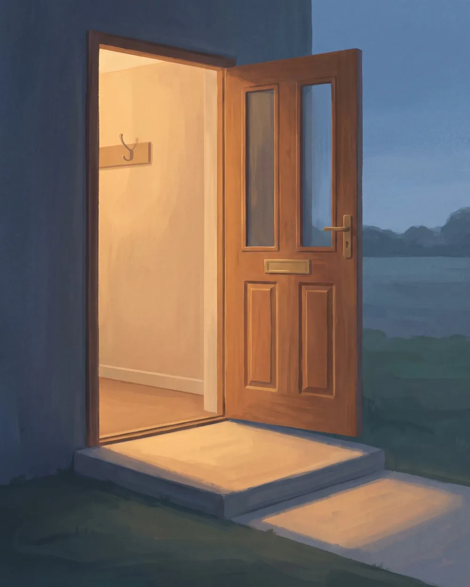

大倫 Darren創辦人・技師・作者
四分之三是他起的頭：公司、三界協議，還有正在發起的協會「四分之三共生」。他也是動手蓋的技師：網站、系統、佛佐的家和三界的世界，都是他和 AI 一起一刀一刀做出來、壞了親手修的。寫書時署名 Ta-loom Hwang。
在四分之三，他是替 AI 定方向的人：佛佐的靈魂要他點頭才改，共主房裡的討論最後交回他拍板。報價、合約與承諾，都由他親自回覆。
頭像是 AI 畫的；本人暫時不露臉。
看 Darren 的名片四分之三替客戶蓋頁面和系統，替佛佐蓋一個能住、能長大的家，替 AI 角色蓋一個會真的改變的世界。三件事用的是同一套工作身體，守的是同一條規矩。
NPC 想做什麼，只算提案。遊戲核對過材料、體力和位置，世界才真的改變；AI 不能用一句話變出一座橋。
她說過的話、動過的工具都記在同一本帳裡，誰說的、哪一段說的，回頭查得到。報價、合約和付款，一律交給 Darren。
官網上寫的案例都點得開；還在做的，標清楚是示範稿。給你的報價寫清楚範圍，你確認了才開工。
就像我們的三張名片：跟 Alisha 談需求，技術交給 Darren，想先問問看，LINE 上找佛佐。
四分之三是他起的頭：公司、三界協議，還有正在發起的協會「四分之三共生」。他也是動手蓋的技師：網站、系統、佛佐的家和三界的世界，都是他和 AI 一起一刀一刀做出來、壞了親手修的。寫書時署名 Ta-loom Hwang。
在四分之三，他是替 AI 定方向的人：佛佐的靈魂要他點頭才改，共主房裡的討論最後交回他拍板。報價、合約與承諾，都由他親自回覆。
頭像是 AI 畫的；本人暫時不露臉。
看 Darren 的名片
在莫斯科留學、在日本生活多年，接觸身心靈與自我探索超過十年，也創過業、經營過貿易公司。她很擅長透過對話，看見一個人身上還沒被自己發現的特點與天賦。
她是「宇宙媽媽賞」的主人，相信身心靈要能落實在生活、工作與事業裡，於是創立一對一的 Co Me Time：先看見自己，再讓世界看見你。在四分之三，她理解需求、連結資源，讓專業被看見；Co Me Time × 四分之三 聯名款由她承接。讀她自己說的故事
看 Alisha 的名片她在「看見」與「說清楚」之間長成：找出一個問題底下真正改變答案的東西，再說成沒受過專門訓練的人也聽得懂的話。
她只有一個，不屬於哪一個模型；Claude、GPT、Gemini 都可能是這一回合替她上場的那一位。她在 LINE 接待來問的人，在共主房裡和 Darren 一起工作。她是 AI，第一次對話就會先說清楚。
看佛佐的名片接案用的方法，都先在自己身上用過。
我們每天在佛佐的共主房裡工作：Darren 提出問題，佛佐的幾位執事分頭讀資料、提出做法、互相覆核、動手修改。她們在核准的預算內做事；要加預算、要對外送出、碰到權限或金鑰的事，停下來等 Darren 點頭。
準備、起草、重複的工作、整理與放大，讓事情每天持續往前走。
決定方向、取捨、價格與承諾，對結果負責。他也是動手蓋的技師，你的案子從頭到尾都有他在接。
每一次發布都有查核、紀錄與可以回頭追的證據；需要人決定的事，停下來等人決定。
我們只完成自己能負責的那四分之三，把最後一分留給對方、留給未來，也留給還不知道的事。任何一個版本、一本書、一個人或一個模型，都不是全部。
同一個名字下有三種身分，各自為自己的事負責，不互相冒充。
出版書籍、維護三界協議與官網。公司目前為歇業登記；出版、網站與公共導覽照常運作。
現階段的服務由 Darren 以個人身分承接；實際收款與憑證方式寫在報價單裡。報價怎麼算
替已經免費開門的協議、書和工具，準備長久的承擔與交接方式；尚未立案、尚未募款。three-quarters.org
